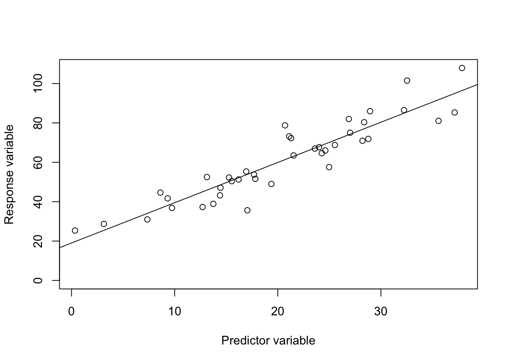
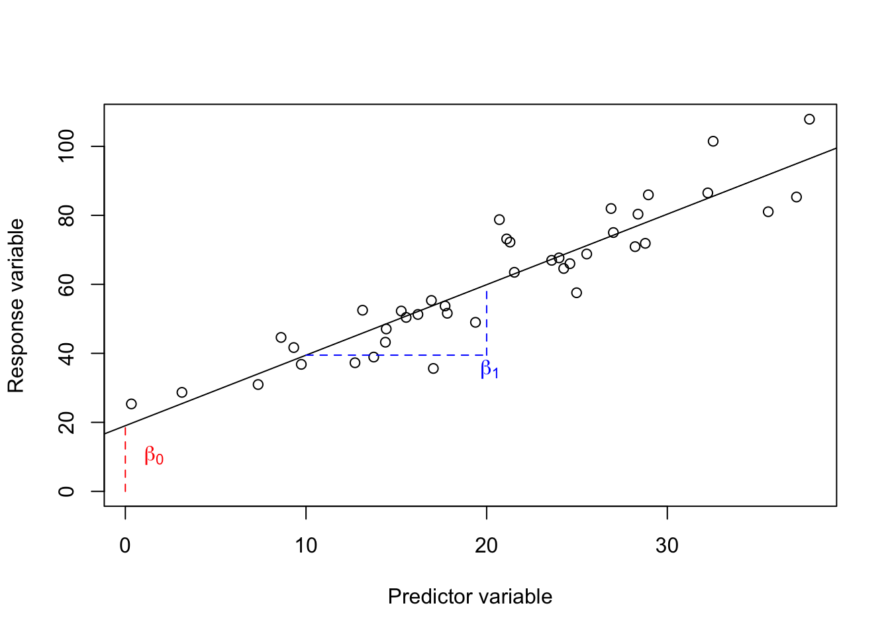
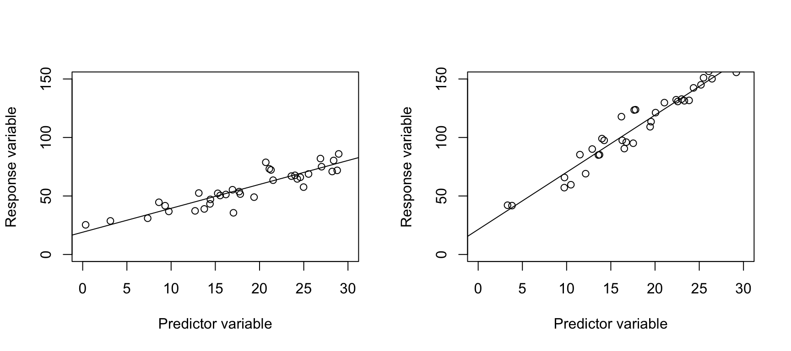
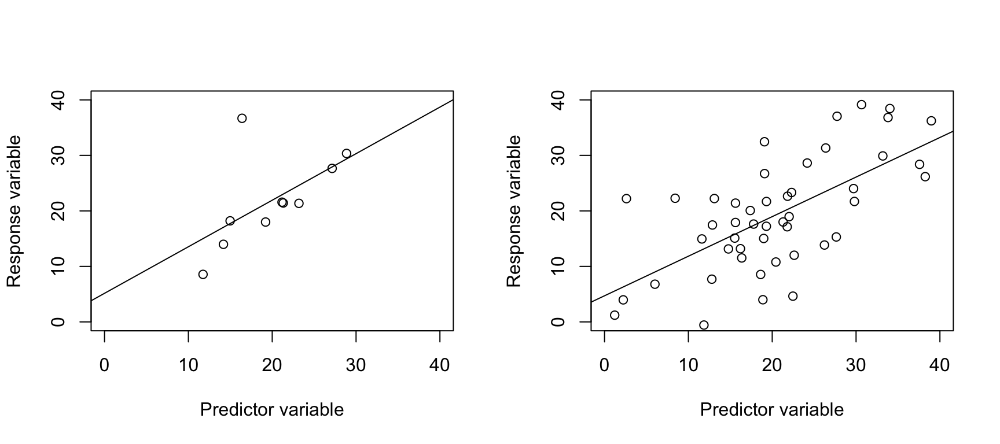
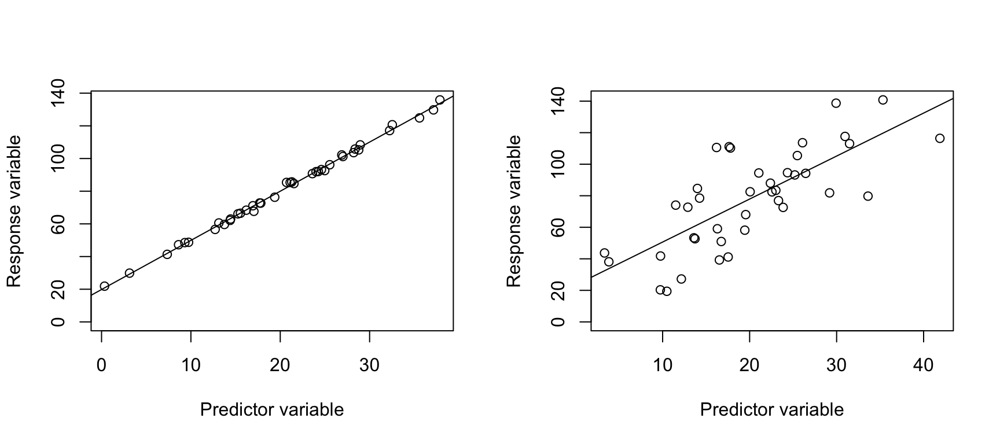
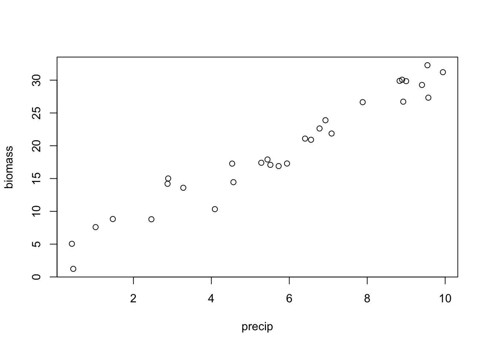
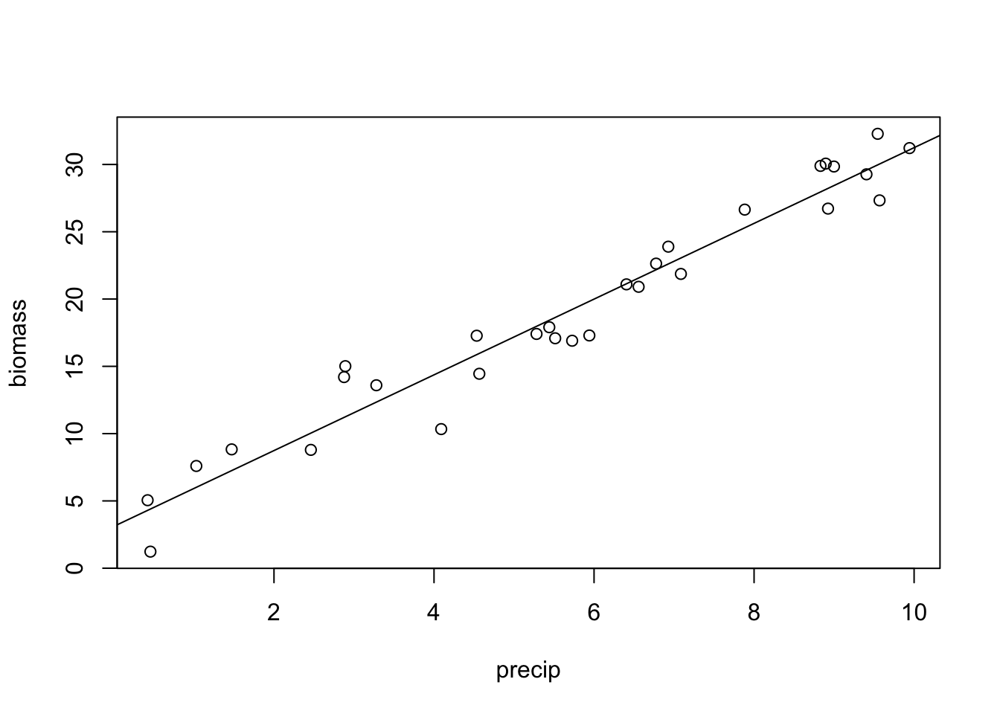

Linear Regression
NRES 710
Last compiled: 2024-08-02
Linear regression
Linear regression is a common statistical analysis when you have both a continuous x-variable and a continuous y-variable. The idea is that the x-variable is meant to cause changes in the y-variable. X is the ‘predictor variable’, and y is the ‘response variable’.
- The purpose of regression is to fit a line to the data and determine the slope of the line.
- Linear regression is not meant to determine if the relationship is ‘significant’ – although that is something that we can do.

Q: Thinking back to algebra class from high school: what is the equation for this line?
y = mx + b
- M = slope = rise over run = \(\frac{\Delta Y}{\Delta X}\)
- b = the y-intercept
In statistics class, we change this equation a bit:
- \(\hat{Y} = \beta_0 + \beta_1X\), where \(\beta_0\) is the y-intercept and \(\beta_1\) is the slope.

This formula isn’t exactly right for statistics. What we want to do is to associate every single X value with every single Y value.
- \(Y_i = \beta_0 + \beta_1x_i + \epsilon\), where \(\epsilon\) is error.
- \(\epsilon \sim N(0, \sigma)\)
This means that we have a line that we are trying to estimate and around this line is error. The error is normally distributed.
How might we visualize that?
The distance between every point and the line on our graph is our error. Some people call this deviance, other people call it residuals – but it is error. The mean of the residuals will be zero, and the standard deviation will be \(\sigma\).
We use linear regression to estimate three parameters: an intercept, a slope, and a standard deviation. If \(\sigma\) is small, all the points will be close to the line. If \(\sigma\) is large, the points will be far from the line.
Plotting a regression line
How does one plot or ‘fit’ a regression line to data?
Let’s plot two continuous variables on the board again, similar to above, and have a student draw what they think is a best-fit line to the data.
What is it that makes that the ‘best-fit line’?
- Does it… approximately go through the middle of the data?
- Are half of the points above and below the line?
- If so, then \(\bar{\epsilon} \sim 0\) and residuals above the line are positive errors, and vice versa.
What if we have the same data, but we fit a horizontal line?
- This creates \(\bar{\epsilon} \sim 0\) here also!
- We also want to minimize the sum of squared error.
Sum of Squared Error (SSE) = \(\sum_{i=1}^n (y_i - \hat{y})^2\) is the sum of squared error across all points! Or, the sum of squared residuals.

Linear regression seeks to minimize SSE, and the above regression line has the smallest sum of all of the blue residual lines possible.
Significance testing
The goal of regression is to estimate \(\beta0\) and \(\beta1\), so we can infer how changes in X influence changes in Y. But we also want to know if this is ‘real’ relationship – if it is statistically significant.
- Or, if we assume there is no relationship between X and Y (\(H_0\) is true), what is the chance of getting the observed relationship, given that assumption and the data we have? This is what the p-value captures.
Scenarios
Let’s consider the following null hypothesis, \(H_0\): there is no relationship between two continuous variables, X and Y.
\(H_0\): no slope, or slope = 0.
Scenario 1
In which of these two cases would you be more likely to reject the null?

Q: In which dataset would you be more likely to conclude that you would reject the null that slope = 0?
The right graph, because the slope is a lot steeper. The effect of X on Y is larger.
As slope increases, p-value decreases.
Scenario 2
In which of these two cases would you be more likely to reject the null?

Q: In which dataset would you be more likely to conclude that you would reject the null that slope = 0?
Q: Why are we less likely to reject the null in the case of the left graph? Small sample size!
As sample sizes increase, p-values decrease.
We have already talked about the p-value of all statistical tests are a function of (1) effect size and (2) sample size. But there is actually one more important feature influencing p-values in regression.
Scenario 3
In which of these two cases would you be more likely to reject the null?

Q: These graphs have the same slope. For which one would you be more likely to say the slope ‘definitely is not zero’?
- Left! The error on the left graph is quite small, which makes it very clear what the relationship is. The right graph is also statistically significant, but it has much more noise and is not not as ‘clear’.
- As error increases, p-values increase.
So we have learned three rules of thumb about our ability to detect statistically significant effects using linear regression:
- As slope increases, p-value decreases
- As n increases, p-value decreases
- As error increases, p-value increases
How do we calculate p-values…?
I am not going to teach you how to do that. Computers do this for us nowadays. But I will briefly mention it because this is a graduate student class so we are aware of fundamentals.
The error in the data is partitioned into a few categories.
Total Sum of Squares = \(\sum_{i=1}^{n} (y_i - \bar{y})^2\) = the total variability in the response (Y) variable.
This can be partitioned into two other variables…
We already discussed Sum of Squared Error (SSE) = \(\sum_{i=1}^n (y_i - \hat{y})^2\) = the distance from each point to the regression line.
Sum of squares due to regression = \(\sum_{i=1}^n (\hat{y_i} - \bar{y})^2\) = the sum of the distance from each predicted y value for the regression line to the average y value.
SSE + SSR = TSS
P-values are calculated by partitioning the Total Sum of Squares into the constituent Sum of Squared Errors and Sum of Squared Errors due to Regression. A ratio of SSR and SSE gives you mean squared error, which gives us an ‘F-statistic’, we then check a table in a book, which gives us a p-value. But computers calculate this for us now, which is a vast improvement. Onward!
We have just covered the theory of linear regression in ~45 minutes! Quick review:
- The goal of regression is to estimate the slope, intercept, and \(\sigma\) (standard deviation).
- We can use regression to test the null hypothesis that the slope = 0.
- It does that by partitioning the TSS into the SSE and the SSR.
- The regression line is fit by minimizing the SSE and making it as small as possible.
- We should be aware of three patterns in regression:
- Slope goes up, p-value goes down
- As error goes up, p-value goes up -As sample size goes up, p-value goes down
- Cover assumptions next time.
Regression in R
Let’s see what this looks like in Program R.
Let’s consider two continuous variables, precipitation and biomass. Our hypothesis is that precipitation influences biomass.
Q: Which is the predictor variable, and which is the response variable?
Let’s now simulate data, so that we know what ‘Truth’ is.
# Set the seed for reproducibility
set.seed(123)
# Adjust margins
par(mar = c(4, 4, 1, 1))
# Simulate a continuous predictor variable, precipitation
n <- 30
precip <- runif(n, min = 0, max = 10)
# Simulate the true, predicted response of biomass to precip (y-hat)
y_hat <- 2 + 3 * precip
# What does this look like?
plot(y_hat ~ precip)
# Simulate error for the response variable
error <- rnorm(n, mean = 0, sd = 2)
# Create the response variable, biomass
# biomass = beta0 + beta1 * precip + epsilon
biomass <- y_hat + error
# Create a data frame
datum <- data.frame(precip = precip, y_hat = y_hat, error = error, biomass = biomass)
# Observe the first few rows of our data
# head(datum)
# First thing we should do when starting an analysis is.. look at our data!
plot(biomass ~ precip, data = datum)
The function we will be using for the rest of the semester to fit linear regression and many other statistical tests is… the linear model, ‘lm()’!
You can learn more about ‘lm()’ in R by reviewing the help files:
# Ask R for information about how 'lm()' works
help(lm)
?lm()Let’s examine the ‘lm()’ documentation in R. Take a look at that.
‘lm()’ usually a formula, where the response variable comes and the predictor variable second: Y ~ X.
R will automatically put an intercept into your model, so you don’t have to specify this as an extra variable in your formula.
- Note: you can take the intercept out with Y ~ X - 1, or you can ask for the intercept specifically with Y~1.
Since we have defined all of our variables in R using code, we can fit the model just by calling those variable objects:
# Fit the linear model
results <- lm(biomass ~ precip, data = datum)
# Examine the results
summary(results)##
## Call:
## lm(formula = biomass ~ precip, data = datum)
##
## Residuals:
## Min 1Q Median 3Q Max
## -4.2859 -1.4406 0.0391 1.4113 3.7624
##
## Coefficients:
## Estimate Std. Error t value Pr(>|t|)
## (Intercept) 3.1133 0.8057 3.864 0.000605 ***
## precip 2.8140 0.1259 22.355 < 2e-16 ***
## ---
## Signif. codes: 0 '***' 0.001 '**' 0.01 '*' 0.05 '.' 0.1 ' ' 1
##
## Residual standard error: 1.975 on 28 degrees of freedom
## Multiple R-squared: 0.9469, Adjusted R-squared: 0.945
## F-statistic: 499.7 on 1 and 28 DF, p-value: < 2.2e-16In this class, I will refer to analysis outputs as ‘results’ and analysis data as ‘datum’. I do this to be consistent, avoid confusion with code in our analysis, and avoid confusion with other functions in R (e.g., the ‘data()’ function).
The intercept
Q: What parameter from our statistical model does the ‘intercept’ represent, and how does it compare to ‘Truth’?
- Rule of thumb: truth should be within 2 standard errors of the estimate. 95% of all data is within two standard errors. Confidence intervals is basically two standard errors in either direction from the mean.
- We are given a ‘t-statistic’ and ‘p-value’ for the intercept. We don’t really care about these; they don’t tell us anything ecologically relevant about our system. We leave it in the model because it makes the line fit better, which we use to estimate slope.
The effect
Q: How does the estimate of the effect of precipitation on biomass compare to truth?
- For each 1 unit increase in precipitation, we get a […] unit increase in biomass.
- Again, the estimate is within two Standard Errors of truth (!)
- We also get a t-statistic and a p-value for this parameter. The
p-value is 2x10^-16… Which is very small and suggests a very clear
results.
- This is the probability of getting our data or data more extreme, given the null hypothesis is true.
- Because this is very small, we can reject the idea that the null hypothesis is truth, and infer that there is a real relationship between precipitation driving biomass.
Other information
There is other information below that people often don’t pay attention to, but there is good stuff down here too.
- Residual standard error: this is our estimate of \(\sigma\), or the standard deviation in the error around the line!
- \(R^2\) and confidence intervals; we will discuss these more in future classes.
- P-value for the whole-model. Since there is only one parameter in the statistical model, the p-value for the entire model is the same as the p-value for the precipitation parameter.
# Plot the data with the line of best fit
plot(biomass ~ precip)
abline(results)
# Maybe you are used to seeing ANOVA tables...
anova(results)## Analysis of Variance Table
##
## Response: biomass
## Df Sum Sq Mean Sq F value Pr(>F)
## precip 1 1949.47 1949.5 499.73 < 2.2e-16 ***
## Residuals 28 109.23 3.9
## ---
## Signif. codes: 0 '***' 0.001 '**' 0.01 '*' 0.05 '.' 0.1 ' ' 1# This should look similar to the bottom line from our regression output